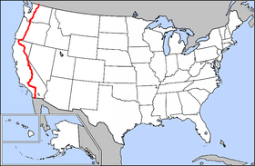
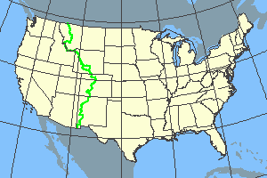
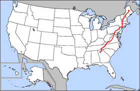

What is Thru-hiking?
Thru-hiking, or through-hiking, is the act of hiking an established long-distance trail, generally 500+ mi, end-to-end continuously.
Completing a thru-hike is an exciting and challenging goal for many outdoor adventurers. Spending months on a trail hiking thousands of miles is an incredible and life-changing feat.
here are three main thru-hiking trails in the United States that long-distance hikers dream about: the Appalachian Trail (AT) in the East, the Continental Divide Trail (CDT) in the Mountain West, and the Pacific Crest Trail (PCT) in the West.
What is the Triple Crown of Thru-hiking?
The Triple Crown of Thru-Hiking refers to completing the Appalachian Trail, the Continental Divide Trail, and the Pacific Crest Trail. The special hikers who finish all three big trails are referred to as a Triple Crowner. It takes a lot of time, planning, and fortitude to be successful in this special undertaking—a total of 7,700+ miles.
These three trails were the first designated National Scenic Trails in the National Trails System. Their total length is about 7,875 miles (12,674 km); vertical gain is more than 1,000,000 feet (300,000 m). A total of 22 states are visited if the three trails are completed. The American Long Distance Hiking Association – West (ALDHA–West) is the only organization that recognizes this hiking feat. At the ALDHA–West gathering, held each fall, the Triple Crown honorees are recognized and awarded plaques noting their achievement. As of the end of the application period in 2023, 665 hikers have been designated Triple Crowners by ALDHA-West since 1994.
Triple Crown Trail Information
| Name | Route | States | Length | |
|---|---|---|---|---|
| Pacific Crest Trail |  | California Oregon Washington | 2,650 mi 4,260 km | |
| Continental Divide Trail |  | New Mexico Colorado Wyoming Idaho Montana | 3,200 mi 5,150 km | |
| Appalachian Trail |  | Georgia North Carolina Tennessee Virginia West Virginia Maryland Pennsylvania | New Jersey New York Connecticut Massachusetts Vermont New Hampshire Maine | 2,189 mi 3,520 km |